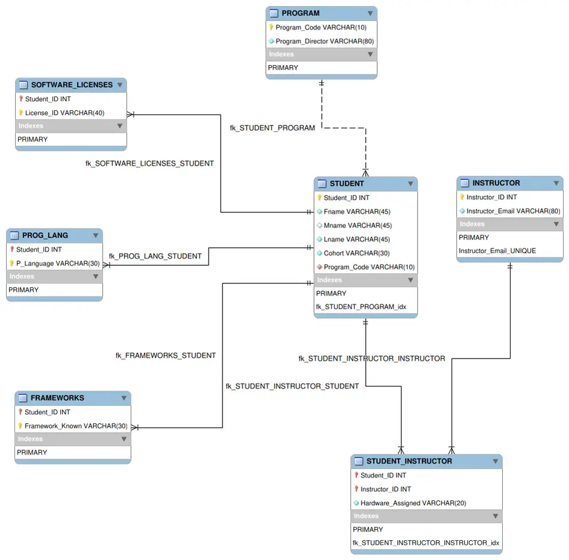

The seatwork gave me one table, Bootcamp_Master_Record, with 3 rows and 9 columns. I had to normalise it from 1NF to 4NF, name three anomalies and defend the final schema.
The seatwork had no rubric. To show the two assigned videos had been used, I cited their own examples in each answer.
First normal form made it bigger
One value per cell is all 1NF asks for. When I expanded 3 licenses, 2 languages and 2 frameworks per student, three rows became eighteen and one student's name appeared sixteen times. Redundancy got worse, which shows that 1NF fixes atomicity and nothing else.
The trap in 4NF
The table after 1NF has no non-key attributes, so it passes 2NF and 3NF without changing. Only 4NF notices that languages and frameworks have nothing to do with each other. A single STUDENT_SKILL(student, language, framework) table is the wrong answer. They need two tables.
Open the full schema

Checking the claims
Before I wrote a functional dependency down, I tested it against the real rows with a short Python check: that the five-column 1NF key is unique, that Hardware determines Student, and exactly what deleting one student would lose. That last check showed plain decomposition still loses a piece of software when its only user is deleted. I added a software catalogue table and an ON DELETE SET NULL rule on the hardware table's student column.
Colour by role
In the follow-up activity I rebuilt the instructor's 4NF answer in MySQL Workbench. Blue marked the main entities, orange the bridge and green the 4NF multi-valued tables, and tinted layers carried the labels so the diagram explained its own colours.